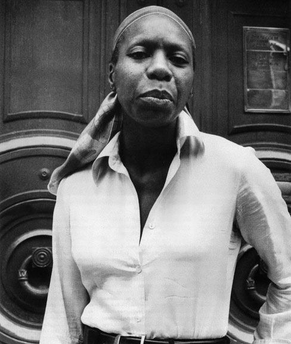
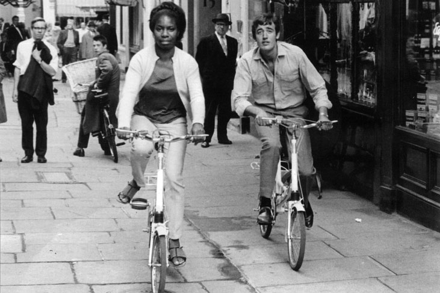
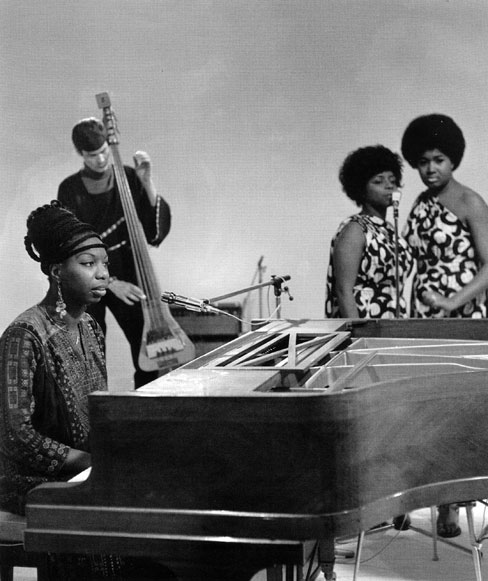
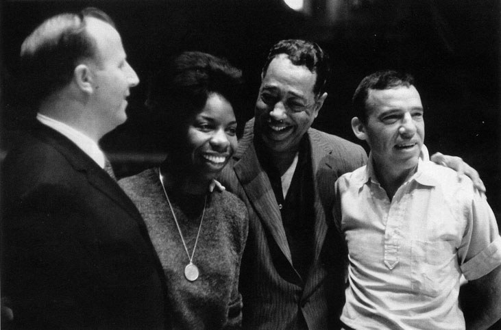
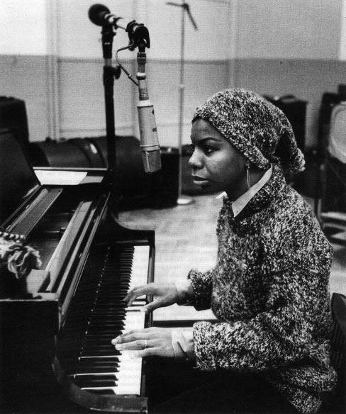

Нина Симон
Нина Симон
И сках да полетя чрез музиката. Мечатаех за концерти и верни почитатели, които да ме следват от град на град. Получих всичко, за което съм мечтала, без едно... любовта – казва Нина Симон. Тя успява да се пребори с алкохола, с расистките предразсъдъци, дори със собствения си сприхав характер. „Не е достатъчно само да искаш, важно е да разбереш навреме дали можеш да следваш мечтата си, дали Бог е благосклонен към теб и те е дарил с нешо. В джаза е важно да имаш сърце." Нищо в живота на Симон не идва даром. Тя се появява на този свят на 21 февруари с името Юнис Катлийн Уеймън. Годината е 1933, мястото - Трайън, Северна Каролина. Майка й е на път да изгуби поредното дете. Многодетното семейство с 8 деца живее трудно, както повечето афроамериканци в началото на XX век в САЩ. Нина има още седем братя и сестри. Семейството я поощрява в музикалните опити, независимо че бащата не иска дъщеря му да се забърква в „евтини кабаретни глупости". Нина започва да учи пиано. На 11 години дебютира със самостоятелен пиано-рецитал в местната библиотека. По време на концерта тя за първи път директно се сблъсква с расизма. Родителите й биват принудени да се преместят на последните редове в залата, определени за чернокожи. Събитието толкова я смущава, че оставя отпечатък върху цялостната музикална кариера на Нина Симон. На 14 години Юнис разбира, че животът й оттук насетне ще бъде свързан не само с музиката, но и със защитата на човешките права. Тя мечтае за голямата сцена. Схваща, че много скоро ще напусне завинаги дома си. „Бунтувах се срещу ограничеността на родителите си, на цялата среда. Знаех, че не ме разбират.

Нина Симон, 19 юли 1978
В очите им бях смешна и нелепа с моите музикални амбиции. Те не слушаха музика, не я разбираха. Върхът на изкуството за тях беше църковният хор, в който пеех госпъл. Мразех тяхната ограниченост. Исках да избягам" - разказва Нина. През 1950 чернокожото момиче се премества в Ню Йорк. Завършва престижния Julliard School, което е рядко изключение за афроамериканка. И започва да свири на пиано в нощните клубове на Филаделфия. В свободното си време дава частни уроци по пиано. „Все още не смеех да се изявя като певица. Страхувах се, че имам особен глас, че не съм достатъчно секси за сцена. Момчетата ме харесваха, но липсата на самочувствие ме сковаваше. Предпочитах да бъда анонимна. Да бъда жената зад пианото. С всеки изминал концерт разбирах, че това няма да продължи дълго. В сънищата си изпявах целия репертоар на изпълнителите, на които акомпанирах. Чувствах, че се побърквам, че трябва да пея." Денят идва. Веднъж собственикът на бара, в който свири, й заявява: „Слушай, защо не пееш, а само свириш?" Нина отвръща: „Защото съм пианистка." „До днес. От утре си или певица, или безработна" - заповядва собственикът. Така Нина започва. През 1954 тогавашният приятел на госпожица Юнис Уеймън случайно започва да я нарича галено Нина, което на испански означава момиче. Постепенно общите им приятели започват да се обръщат към нея с Нина. Към името тя добавя фамилията Симон, защото това е малкото име на любимата й филмова актриса - французойката Симон Синьоре. „С новата самоличност ми дойде и куражът да пея. Трябваше да спася участие, в което певицата, на която акомпанирах, се разболя. Знаех всичките парчета наизуст, впуснах се в авантюрата.

Нина Симон и британският певец и продуцент Майк Хърст. Нина е определена за жена на годината през 1966 от Jazz at Home Club
Аплодисментите на публиката ме накараха да повярвам в себе си. След това участие бях убедена, че съм родена, за да бъда певица" - признава Нина. Малки опушени клубове, много алкохол, артисти и бохема. Времето минава бързо. Капризна е, не й върви в любовта. Възпява собствените си житейски провали и разочарования. През 1957 Нина Симон прави първите си записи, а една година по-късно излиза дебютният й албум. С него се поставя началото на една изключително успешна кариера в различни музикални стилове -джаз, госпъл, блус, R & В и дори поп. „За белите хора джазът е нещо черно и мръсно. Аз не свиря това. Аз свиря черна класическа музика" - казва Нина. Две години по-късно Нина Симон прави първата си от многото златни плочи с арията I Loves You Роrgу от операта Порги и Бес на Гершуин. Песента я превръща в звезда. Следващият и сингъл Му Ваbу Just Cares for Me е разочароващ и звукозаписната компания отказва да подпише договор. Нина не се отказва, кръстосва Щатите с участия в различни програми. Доказва, че джаз звезда можеш да бъдеш и без комерсиални хитове. Майка й я съветва: „Когато пееш, не се обръщай към хората, а към Бог!" Колкото по-известна става Нина, толкова повече посреща славата си с отвращение. Тя е бунтар, а не добре нахранен сноб. „Не обичам Живота на звездите. В шоубизнеса съм заради парите" - казва Нина.

Нина Симон в предаването на Мишел Арно Quatre temps. Париж, март 1969
През 60-те Симон се присъединява към Движението за правата на човека и записва няколко политически песни. Успехът е съкрушителен. Оказва се, че една чернокожа певица с ясно изразена политическа позиция може да събере хиляди почитатели. „Не е достатъчно да бъдеш просто артист. По-важно е да си човек, който прави съпричастни другите към проблемите. Сцената е място за изповед, не за кокетничене" - обяснява Нина. Тя става една от най-популярните джаз певици в света с десетки албуми и над 50 собствени композиции, включително протестните й песни, от които най-известни са Four Women и Mississippi Goddamn. Последната е посветена на смъртта на четири тъмнокожи деца, жертви на бомбен атентат в Алабама. През 1971 Нина Симон напуска САЩ поради неразбирателства със звукозаписните компании и данъчните власти. Като причина звездата посочва расизма. „Не можех да остана в една страна, която само парадира с демократичната си система, а в действителност унижава хора с различен цвят на кожата. Американската мечта е лъжа." Нина се установява на Карибите, кръстосва света със своето джаз кабаре, издава плочи. В личен план Животът й е низ от провали. Ненаситна за любов, Симон се хбърля в поредица от връзки. Първият и брак с Доналд Рос бързо се разпада. Вторият й съпруг е детективът от Ню Йорк Анди Страуд, който се преквалифицира в неин мениджър.

Нина Симон в компанията на Дюк Елингтън, 1960. Същата година тя издава албума Nina Simone at Newport
От него Нина ражда единствената си дъщеря през 1962, но я поверява на грижите на гувернантки. „Нищо в личния ми живот не подсказва щастие, дори раждането на детето ми." Нина напуска Анди и се влюбва в карибския политик Ерол Бароу, първия министър-председател на Барбадос. Връзката им не се превръща в нищо повече от афера. През 1978 певицата се завръща в родината си, но е арестувана за укриване на данъци, които тя не плаща в знак на протест срещу войната във Виетнам. „Исках да покажа, че нещо в системата не е наред. Защо от обикновения човек се изисква да плаща данъци, да спазва закони, а тези, от които зависи животът му, всъщност играят със съдбата му." Звездата обвинява официалните власти в САЩ за напускането на родината си. Тя се възмущава, че богатите са много богати, а бедните много бедни. „Разбрах, че завинаги трябва да напусна Америка. Избрах Европа като едно по-толерантно място за живеене. Във Франция ме обичаха. Усещах, че това е едно особено привличане, много по-различно от симпатиите на публиката към изпълнителя" - пише певицата в

Нина Симон записва албума Sings The Blues в RCA Victor's studio B, 1967
автобиографичната си книга I Put a Spell on You. През 1993 Симон се заселва в Южна Франция. Успокоява се, разделя се с последния си любовник. Отдава се изцяло на музиката. И на своята градина с грозде, праскови, ягоди и малини. През 1995 тя стреля по сина на съседа си, който със смеха си нарушава концентрацията й. Следва дело за хулиганство, но Симон е оправдана. Има труден характер, често избухва. Не понася рап музиката, както и някои съвременни попзвуци. „Всичко, което виждам в Америка, е рап музика" -Казва Нина. В Края на 90-те постепенно слиза от сцената. По същото време на въпроса, какво очаква от един мъж, Нина заявява: „Искам мъж, който е богат и който да ми купи лодка. Искам да имам лодка. Моята първа любов са морето и водата, не музиката. Втората е музиката." Нина умира в съня си на 21 срещу 22 април 2003 във френския си дом. Тя е на прага на своята 70-годишнина. До леглото на певицата в последните й дни е единственото й дете - дъщеря й Лиза.